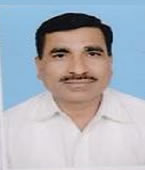

Computer Department

Vision:
To Impart Quality Technical Education For Development of Technocrats.
Mission:
M1: To provide quality in education and facilities for students to help them to achieve higher academic career growths.
M2: To impart education to meet the requirements of the industry and society by technological solutions.
M3: Develop technical & soft skill through co–curricular and extra-curricular activities for improving personality.
Program Educational Objectives:b>
PEO1: Provide socially responsible, environment friendly solutions to Computer engineering related broad-based problems adapting professional ethics.
PEO2: Adapt state-of-the-art Computer engineering broad-based technologies to work in multi-disciplinary work environments.
PEO3: Solve broad-based problems individually and as a team member communicating effectively in the world of work.
About Department:
Department of Computer Technology is a synergistic product of many proactive minds. A team of Faculty and Technical Staff members is working in First Shift
& Second Shift under the leadership of Prof. G. B. Katkade unanimously harnesses its potential in Technical,
Industrial and Global aspects to take the department to greater heights. The Diploma programme
in Computer Technology started from the academic year 1986-87 with intake of 30. Looking at the Global and Techn
ological developments in Computer fields, the intake was increase to 60 in 1991 and to 120 in year 2007-08. Also the institute
has started Second Shift for Computer Technology course in year 2007-08.The current student intake capacity
is 120 in First Shift and 60 in Second Shift.
Academics:
We provide quality education with sound technical knowledge which will fulfill the current industry needs. Our faculty members aim at delivering top class
education, blending their rich experience with Classroom and Practical Demonstrative Teaching. The Students are
always being among the top academic performers in the Nashik region and also has performed well at state level.
Infrastructure:
The department has well-equipped laboratories and classroom with LCD projectors. The equipments includes PCs (Intel P-IV, Dual Core, Core to Duo and i3 based),
Printers (Dot Matrix and Laser), Scanners. All the PCs and Labs are Networked and FREE Internet Facility is
provided to students. The labs have 24x7 power back-up by On-Line UPS and the 320KVA Genset. Department
has separate Departmental library consisting of more than100 titles for in-Lab reference to the students.
Skills Development:
Department focuses on both the Technical and Soft skills development of the students. Developing students’ ability to perform and evaluate the Practicals is the
prime concern. Department focuses on co-curricular and extra-curricular activities under the student banner
‘Association of Computer Technology Students (ACTS)’ for First Shift and ‘Association of Second Shift
Computer Technology Students’ (ASCOTech).The department has brought several laurels to this institute by actively
participating and winning several Technical & Project competitions at State and National Levels. For students
as well as staff, the department regularly arranges Seminars, Workshops by Industry, Corporate experts.
To enhance the abilities and understand the technical applications, various industrial visits and vacational training
conducted regularly for students.
Prof. G. B. Katkade
HOD, Computer Technology
K. K. Wagh Polytechnic, Nashik-3
Home